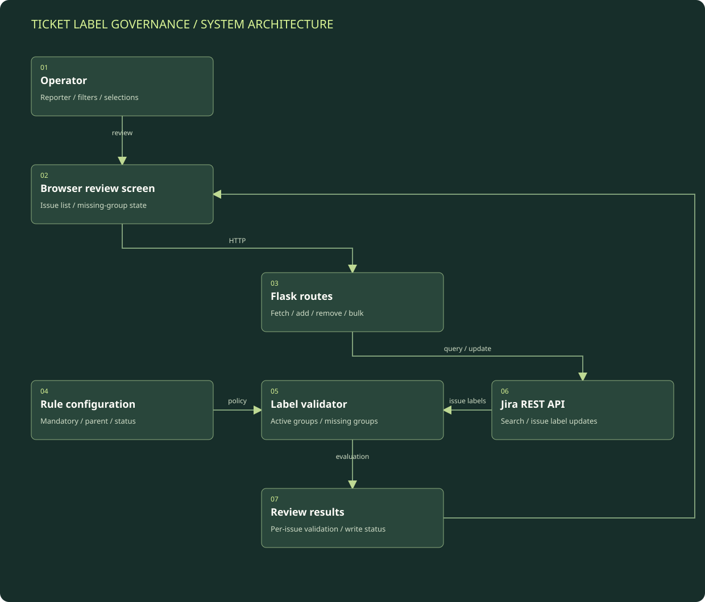

Choose the review scope
The UI supplies a reporter and optional filters. The backend constructs a scoped Jira query and requests the fields needed for review.
Detailed architecture / Operational workflow automation
A Flask application that retrieves Jira issues, evaluates conditional label requirements, and supports individual and selected-ticket updates.
Reconstructed from reviewed implementation. Environment names and operational identifiers are intentionally generalized.
Boxes represent logical modules and external systems; they do not imply a separate server for each box. On a narrow screen, scroll the diagram horizontally or open the full-size SVG. The tables below provide a text equivalent.

| Component | Responsibility | Boundary / qualification |
|---|---|---|
| Browser UI | Presents scope, validation, label editing, and selected-ticket actions. | The user makes the remediation choice; the case study does not imply an autonomous governance agent. |
| Flask API | Coordinates retrieval and label mutations through backend routes. | No original API destinations or authentication material are published. |
| Conditional validator | Evaluates status and parent-label conditions against configured groups. | Missing group means no allowed label is present; that is narrower than full policy enforcement. |
| Jira adapter | Performs issue searches and label updates. | The external issue system remains the system of record. |
| Result handling | Returns individual outcomes for bulk requests. | Partial success must be distinguishable from full completion. |
The UI supplies a reporter and optional filters. The backend constructs a scoped Jira query and requests the fields needed for review.
The Jira client fetches issues and converts fields into a smaller response containing ticket metadata, current labels, and status.
The validator checks status conditions and parent-label conditions. An active mandatory group is missing when none of its allowed labels is present.
The API returns missing groups, active groups, and an overall mandatory-label state. The browser uses those values to make incomplete records visible.
An operator chooses labels or a selected-ticket bulk action. Flask sends label additions/removals to Jira, reports results, and the issue set can be fetched again to confirm current state.
Resume: ITSM automation and incident-management context. Implementation review: Flask routes, conditional validator, Jira issue search, per-ticket updates, and bulk-update loop.